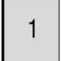
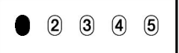
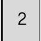
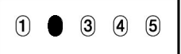
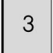
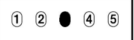
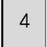
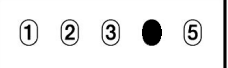
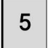
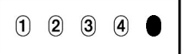

가채점표에옮겨적기연습프로그램
버전0.0.1
자동을 누르고 잠시 기다리면 자동 넘기기가 실행됩니다.
자동 넘기기 실행 중엔 간격 시간을 바꿔도 적용되지 않습니다.
정답 보기를 누르면 답안지 모양 아래에 정답이 나타납니다.
화면에 나타나는 정답은 넘기기를 눌렀거나 자동 넘기기를 작동시켰더라도 자동으로 갱신되지 않습니다.
간격 시간 설정
1.7
초
넘기기
자동
중지
정답 보기
초기화




